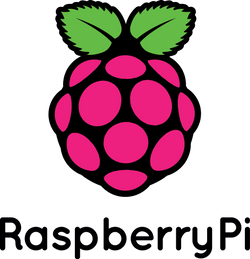
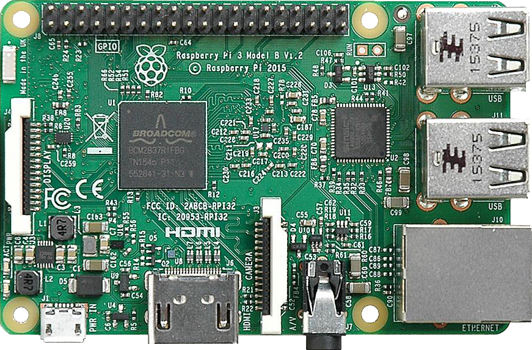

영국의 라즈베리 파이(Raspberry Pi) 재단에서 만든 초소형/초저가의 컴퓨터다. 교육용 프로젝트의 일환으로 개발되었으며, 이 때문에 RCA(CVBS) 출력 잭을 가지고 있다. 1980년대 BBC의 컴퓨터 교육 프로젝트였던 BBC Micro에서 영감을 받았다고 한다.
Raspberry Pi는 2012년 3월 출시되었는데, 1시간만에 매진되는 진풍경을 보여줬다! 일부 학교들에서는 라즈베리 파이를 교육용으로 이용한다.
아두이노와 함께 소수의 관련 업계 엔지니어들만의 영역이었던 개발 보드의 저가화와 대중화의 시대를 연 주역이라고 할 수 있다. 아두이노가 MCU계에서 공통 소프트웨어 API 및 하드웨어 인터페이스를 제공하면서 호환 하드웨어와 소프트웨어라는 영역을 열었고 일반 프로그래머의 참여를 불러 왔다면 라즈베리파이는 임베디드 리눅스 기반 개발 보드에서 거의 유사한 방향으로 새 장을 열었다.
특히 개당 35달러에 불과한 동급, 개발 보드 업계에서는 가히 충격과 공포를 불러온 가격으로 인해 개발 보드의 저가화를 몰고 온 주역이기도 하다. 10년 전 유사한 종류의 개발 보드가 국내에서 30만원을 호가하던 것을 생각해보면 국내 기준으로 5만원의 가격이 얼마나 혁신적인 것인지 알 수 있다.

라즈베리파이는 micro hdmi 포트 2개, C-type의 충전 단자, usb 3.0 2개,
일반 usb 단자 2개, 랜선 단자, Raspberrypi 전용 디스플레이 단자,
카메라 단자, SD Card 단자,
이더넷, 기타 잭 등으로 이루어져 있다.
좌측 상단의 위치하고 있는 것은 GPIO 포트인데, 이는 라즈베리파이가 간단하고 빠르게 프로젝트를 만들기 용이하게 해주는 요인이다.
가운데에 있는 정사각형에는 발열으로 인한 피해를 최소화 하기 위해, 방열판을 반드시 붙여주어야 한다.
라즈베리파이의 첫 설정을 위해 아래 링크를 타고 가면 아주 깔끔하고 명료한 설명이 있으니 참고하면 된다.
Click Here :D